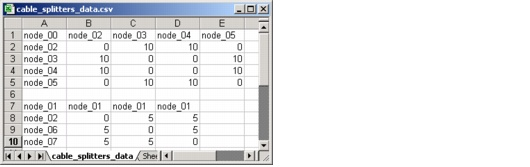

Importing and Exporting Data > Data File Formats > Cable Splitter Configuration Data Files
Cable Splitter Configuration Data Files
Cable splitter configuration data files use the format shown in Figure 5-11. Each cable splitter is defined by a matrix. The first cell in each matrix specifies the node that contains the cable splitter. The rows and columns specify the nodes adjacent to the cable splitter. The intermediate fields specify the number of fiber pairs between the two nodes.
Figure 5-11 Cable Splitter Configuration Data File in .csv Format

| Home © 1987-2007 OPNET Technologies, Inc. All Rights Reserved. This software may be covered by one or more U.S. Patents. See complete patent notice in the Legal Notices section. OPNET Support Center |